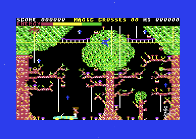
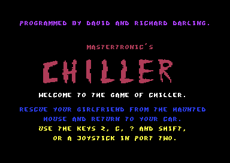

<meta charset="utf-8">
<meta name="viewport" content="width=device-width, initial-scale=1">
<title>{{title}}</title>
<link rel="preconnect" href="https://fonts.googleapis.com">
<link rel="stylesheet" href="https://fonts.googleapis.com/css2?family=Lato:wght@400;700;900&family=IBM+Plex+Mono:wght@400;500&display=swap">
<link rel="stylesheet" href="reference/chiller-page.css">
<style>
.overview-shot{margin:26px 0 0;max-width:576px}
.overview-shot img{width:100%;height:auto;display:block;image-rendering:pixelated}
.overview-shot figcaption{font-size:14px;color:var(--ink-mute);margin-top:8px}
.overview-links{display:flex;flex-wrap:wrap;gap:12px 24px;margin:22px 0 0;font-weight:700}
.overview-links a{white-space:nowrap}
</style>
<!-- tabs -->
<header class="hero">
  <p class="eyebrow">{{platform}} · {{year}} · {{publisher}} · Overview</p>
  <h1>{{title}}</h1>
  <p class="sub">Before founding Codemasters, David and Richard Darling made a £1.99 horror game for Mastertronic. Its rescue mission takes you to a haunted house and back, accompanied by music that became the subject of a legal dispute.</p>
</header>
<main class="wrap">
  <section id="journey">
    <p class="fig">01 · The journey</p>
    <h2 class="t">To the haunted house and home again</h2>
    <p>A boy must cross a forest, a cinema, a ghetto, and a graveyard to rescue his girlfriend from a haunted house. Five magic crosses on each screen stand between him and the next location. Walking and jumping consume energy, enemies drain it on contact, and mushrooms offer a chance to recover. Crumbling ledges break beneath his feet.</p>
    <figure class="overview-shot"><figcaption>The forest begins the journey. Crosses are scattered among its platforms, while the energy bar above measures how much further the boy can go.</figcaption></figure>
    <p>Finding the girl changes the task. You guide both characters home, switching between them to collect blue crosses with the boy and red crosses with the girl. The character left waiting remains vulnerable to enemies.</p>
    <p>The return journey also remembers your outward trip. Mushrooms you ate are gone, and broken ledges stay broken. Each familiar screen comes back with the consequences of your first crossing.</p>
  </section>
  <section id="people">
    <p class="fig">02 · The makers</p>
    <h2 class="t">The people behind Chiller</h2>
    <p>The title screen credits David and Richard Darling jointly with programming. <a href="about.html#src-2">Games That Weren’t</a> records more specific roles: Richard wrote the code, and David drew the graphics. David Dunn supplied the music. The brothers went on to found Codemasters in 1986.<sup class="fn"><a href="about.html#src-3" title="Codemasters’ admission document, 2018">3</a></sup></p>
    <figure class="overview-shot"><figcaption>The title screen names the Darling brothers and sets the goal: rescue the girl and return to the car. Other contributors are identified by later sources.</figcaption></figure>
    <p>The title artwork is attributed to Jim Wilson, also recorded as James Wilson, by game databases. Chiller itself does not credit him. The <a href="about.html#sources">credits and source records</a> distinguish those later attributions from the names displayed in the game.</p>
  </section>
  <section id="reception">
    <p class="fig">03 · Reception</p>
    <h2 class="t">What £1.99 bought</h2>
    <p>Mastertronic released Chiller on cassette in 1984. Its £1.99 price shaped the reviews: this was a game being judged against releases costing several times as much.</p>
    <p>Writing in <i>Personal Computer News</i>, Bryan Skinner called Chiller “a winner”. He argued that games of this standard at £1.99 would put pressure on publishers charging £6 to £10. <a href="about.html#src-4">His review</a> treated the price as a challenge to the rest of the market.</p>
    <p>Fraser Marshall’s <a href="about.html#src-5">review in <i>Personal Computer Games</i></a> was more qualified. He compared the cross collecting with <i>Manic Miner</i>, an earlier platform game, but thought Chiller sufficiently different to offer hours of enjoyment. He also found the graphics occasionally indistinct and admitted that he never got past the cinema.</p>
    <p>That left most of the outward journey, and the whole return trip, beyond the point Marshall reached. Bringing the girl home adds a second character to manage and sends both through scenery already changed by the boy.</p>
    <p>The Mastertronic Collectors Archive records 121,874 Commodore 64 copies sold across the two releases, placing Chiller fourth among Mastertronic’s original games. <a href="about.html#src-6">Its sales table</a> counts the versions together.</p>
  </section>
  <section id="release">
    <p class="fig">04 · The music</p>
    <h2 class="t">The music that had to change</h2>
    <p>The first release played David Dunn’s arrangement of Michael Jackson’s <i>Thriller</i>. Following a dispute over the music reported in November 1984, Mastertronic issued a version with a replacement tune. <a href="about.html#src-7">The release sources</a> document that dispute.</p>
    <p>The copy examined here contains the original arrangement. You can <a href="music.html#music">hear both releases on the Music page</a> and switch between them while the player runs. The music used for the level cards and game over stayed the same.</p>
  </section>
  <section id="explore">
    <span id="related-games"></span>
    <p class="fig">05 · Inside the game</p>
    <h2 class="t">What waits on the way home</h2>
    <p>The title screen promises a return to the car. Collecting the last cross instead starts another journey through the forest, with your score retained. The rescue can be completed, but Chiller keeps going.</p>
    <p>One enemy makes the final forest stranger still. A colour effect on the title screen writes into that enemy’s animation settings by mistake. On the way home, the creature cycles through other enemies, the characters’ own pictures, and pieces of program code displayed as graphics. The <a href="discoveries.html#shape-shifter">animated demonstration</a> shows the sequence and explains the misplaced write.</p>
    <p>Other surviving routines describe features the released game never uses, including killing enemies for points. They show that more was considered than reached the finished game; how those attacks were meant to work remains uncertain.</p>
    <p><a href="play.html">Play Chiller</a>, starting at the forest or any later screen, or <a href="levels.html#map">explore the maps and enemy paths</a>. The <a href="discoveries.html">Discoveries page</a> follows the unused features and the quirks that survived release.</p>
  </section>
</main>
